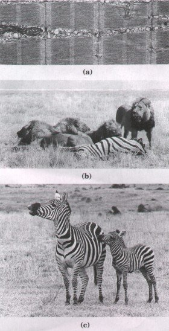
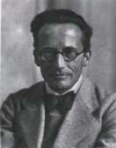
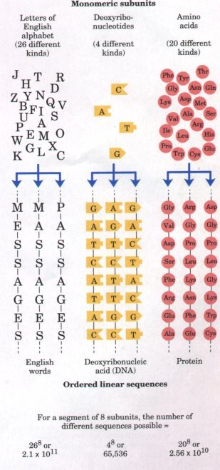

Living organisms are composed of
lifeless molecules. When these molecules are isolated and
examined individually, they conform to all the physical
and chemical laws that describe the behavior of inanimate
matter. Yet living organisms possess extraordinary
attributes not shown by any random collection of
molecules. In this chapter, we first consider the
properties of living organisms that distinguish them from
other collections of matter. After arriving at a broad
definition of life, we can describe a set of principles
that characterize all living organisms. These principles
underlie the organization of organisms and the cells that
make them up, and they provide the framework for this
book. They will help you to keep the larger picture in
mind while exploring the illustrative examples presented
in the text.Living Matter Has Several CharacteristicsWhat distinguishes all living organisms from all inanimate objects? First, they are structurally complicated and highly organized. They possess intricate internal structures (Fig. 1-la) and contain many kinds of complex molecules. By contrast, the inanimate matter in our environment-clay, sand, rocks, seawater-usually consists of mixtures of relatively simple chemical compounds. Second, living organisms extract, transform, and use energy from their environment (Fig. 1-lb), usually in the form of either chemical nutrients or the radiant energy of sunlight. This energy enables living organisms to build and maintain their own intricate structures and to do mechanical, chemical, osmotic, and other types of work. By contrast, inanimate matter does not use energy in a systematic way to maintain structure or to do work. Inanimate matter tends to decay toward a more disordered state, to come to equilibrium with its surroundings. |
 Figure 1-1 Some characteristics of living matter. (a) Microscopic complexity and organization are apparent in this thin section of vertebrate muscle tissue, viewed with the electron microscope. (b) The lion uses organic compounds obtained by eating other animals to fuel intense bursts of muscular activity. The zebra derives energy from compounds in the plants it consumes; the plants derive their energy from sunlight. (c) Biological reproduction occurs with near-perfect fidelity.
 Erwin Schrodinger 1887-1961 |
The third and most characteristic attribute of living organisms is the capacity for precise self replication and self assembly (Fig. 1-lc), a property that can be regarded as the quintessence of the living state. A single bacterial cell placed in a sterile nutrient medium can give rise to a billion identical "daughter" cells in 24 hours. Each of the cells contains thousands of different molecules, some extremely complex; yet each bacterium is a faithful copy of the original, constructed entirely from information contained within the genetic material of the original cell. By contrast, mixtures of inanimate matter show no capacity to grow and reproduce in forms identical in mass, shape, and internal structure, generation after generation.
The ability to self replicate has no true analog in the nonliving world, but there is an instructive analogy in the growth of crystals in saturated solutions. Crystallization produces more material identical in lattice structure with the original "seed" crystal. Crystals are much less complex than the simplest living organisms, and their structure is static, not dynamic as are living cells. Nonetheless, the ability of crystals to "reproduce" themselves led the physicist Erwin Schrodinger to propose in his famous essay "What Is Life?" that the genetic material of cells must have some of the properties of a crystal. Schrodinger's 1944 notion (years before the modern understanding of gene structure was achieved) describes rather accurately some of the properties of deoxyribonucleic acid, the material of genes.
Each component of a living organism has a specific function. This is true not only of macroscopic structures such as leaves and stems or hearts and lungs, but also of microscopic intracellular structures such as the nucleus or chloroplast. Even individual chemical compounds in cells have specific functions. The interplay among the chemical components of a living organism is dynamic; changes in one component cause coordinating or compensating changes in another, with the result that the whole ensemble displays a character beyond that of the individual constituents. The collection of molecules carries out a program, the end result of which is the reproduction of the program and the self perpetuation of that collection of molecules.
Biochemistry Seeks to Explain Life in Chemical TermsThe molecules of which living organisms are composed conform to all the familiar laws of chemistry, but they also interact with each other in accordance with another set of principles, which we shall refer to collectively as the molecular logic of life. These principles do not involve new or as yet undiscovered physical laws or forces. Instead, they are a set of relationships characterizing the nature, function, and interactions of biomolecules. If living organisms are composed of molecules that are intrinsically inanimate, how do these molecules confer the remarkable combination of characteristics we call life? How is it that a living organism appears to be more than the sum of its inanimate parts? Philosophers once answered that living organisms are endowed with a mysterious and divine life force, but this doctrine (vitalism) has been firmly rejected by modern science. The basic goal of the science of biochemistry is to determine how the collections of inanimate molecules that constitute living organisms interact with each other to maintain and perpetuate life. Although biochemistry yields important insights and practical applications in medicine, agriculture, nutrition, and industry, it is ultimately concerned with the wonder of life itself. |
Figure 1-2 Diverse living organisms share common chemical features. The eagle, the oak tree, the soil bacterium, and the human share the same basic structural units (cells), the same kinds of macromolecules (DNA, RNA, proteins) made up of the same kinds of monomeric subunits (nucleotides, amino acids), the same pathways for synthesis of cellular components, and the same genetic code and evolutionary ancestors. |
A massive oak tree, an eagle that soars above it, and a soil bacterium that grows among its roots appear superficially to have very little in common. However, a hundred years of biochemical research has revealed that living organisms are remarkably alike at the microscopic and chemical levels (Fig. 1-2). Biochemistry seeks to describe in molecular terms those structures, mechanisms, and chemical processes shared by all organisms and to discover the organizing principles that underlie life in all of its diverse forms.
Although there is a fundamental unity to life, it is important to recognize at the outset that very few generalizations about living organisms are absolutely correct for every organism under every condition. The range of habitats in which organisms live, from hot springs to Arctic tundra, from animal intestines to college dormitories, is matched by a correspondingly wide range of specific biochemical adaptations. These adaptations are integrated within the fundamental chemical framework shared by all organisms. Although generalizations are not perfect, they remain useful. In fact, exceptions often illuminate scientific generalizations.
| Most of the molecular constituents of
living systems are composed of carbon atoms covalently
joined with other carbon atoms and with hydrogen, oxygen,
or nitrogen. The special bonding properties of carbon
permit the formation of a great variety of molecules.
Organic compounds of molecular weight (Mr) less than about 500,
such as amino acids, nucleotides, and monosaccharides,
serve as monomeric subunits of proteins, nucleic
acids, and polysaccharides, respectively. A single
protein molecule may have 1,000 or more amino acids, and
deoxyribonucleic acid has millions of nucleotides. Each cell of the bacterium Escherichia coli (E. coli) contains more than 6,000 difierent kinds of organic compounds, including about 3,000 different proteins and a similar number of different nucleic acid molecules. In humans there may be tens of thousands of different kinds of proteins, as well as many types of polysaccharides (chains of simple sugars), a variety of lipids, and many other compounds of lower molecular weight. To purify and to characterize thoroughly all of these molecules would be an insuperable task were it not for the fact that each class of macromolecules (proteins, nucleic acids, polysaccharides) is composed of a small, common set of monomeric subunits. These monomeric subunits can be covalently linked in a virtually limitless variety of sequences (Fig. 1-3), just as the 26 letters of the English alphabet can be arranged into a limitless number of words, sentences, or books. Deoxyribonucleic acids (DNA) are constructed from only four different kinds of simple monomeric subunits, the deoxyribonucleotides, and ribonucleic acids (RNA) are composed ofjust four types of ribonucleotides. Proteins are composed of 20 different kinds of amino acids. The eight kinds of nucleotides from which all nucleic acids are built and the 20 different kinds of amino acids from which all proteins are built are identical in all living organisms. |
 Figure 1-3 Monomeric subunits in linear sequences can spell infinitely complex messages. The number of different sequences possible (S) depends on the number of different kinds of subunits (N) and the length of the linear sequence (L): S = NL. For polymers the size of proteins (L ≈ 1,000), S is very large, and for nucleic acids, for which L may be many millions, S is astronomical. |
Most of the monomeric subunits from which all macromolecules are constructed serve more than one function in living cells. The nucleotides serve not only as subunits of nucleic acids, but also as energycarrying molecules. The amino acids are subunits of protein molecules, and also precursors of hormones, neurotransmitters, pigments, and many other kinds of biomolecules.
From these considerations we can now set out some of the principles in the molecular logic of life:
All living organisms have the same kinds of monomeric subunits.
There are underlying patterns in the structure of biological macromolecules.
The identity of each organism is preserved by its possession of distinctive sets of nucleic acids and of proteins.